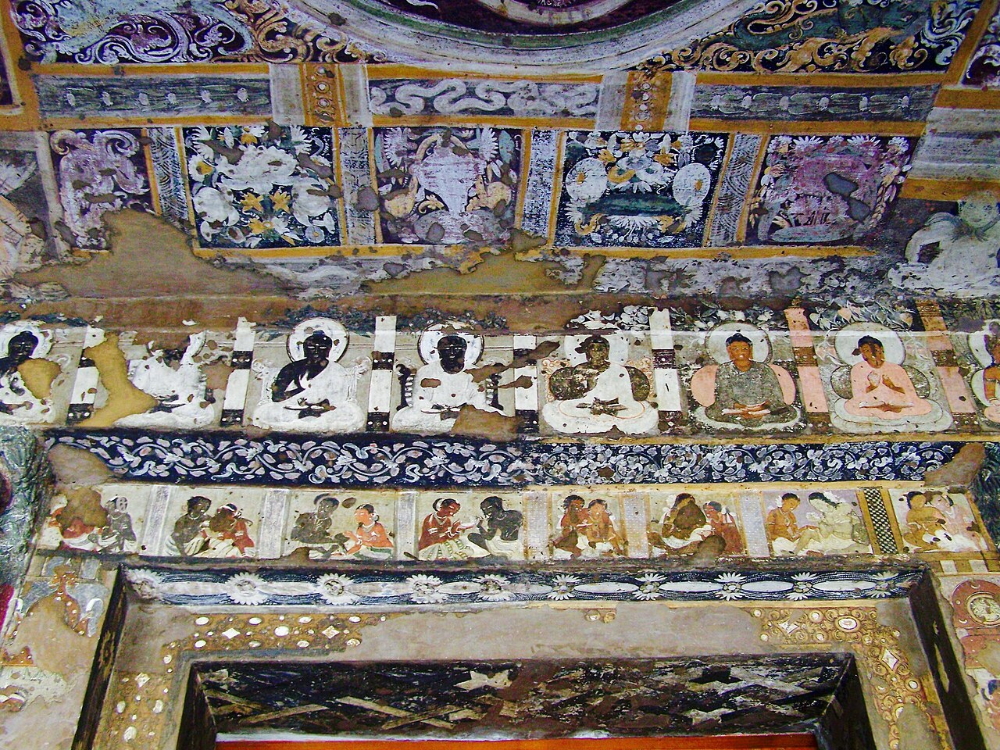
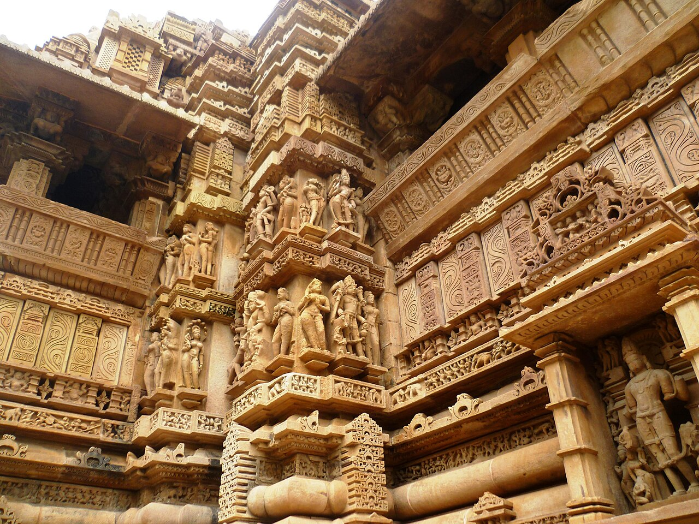
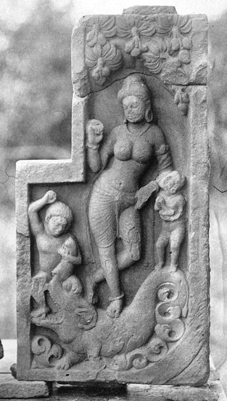
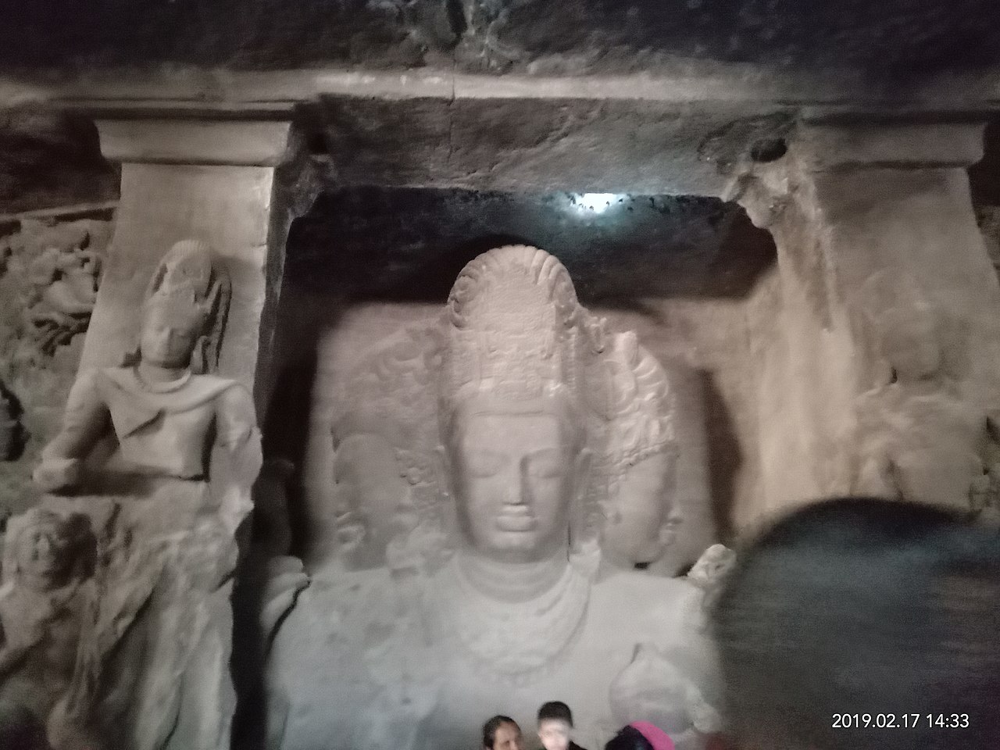
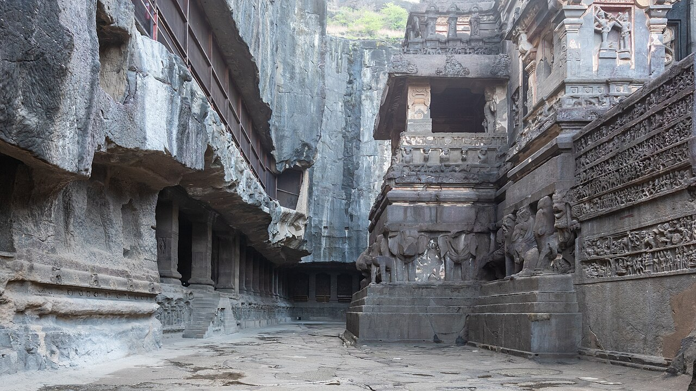
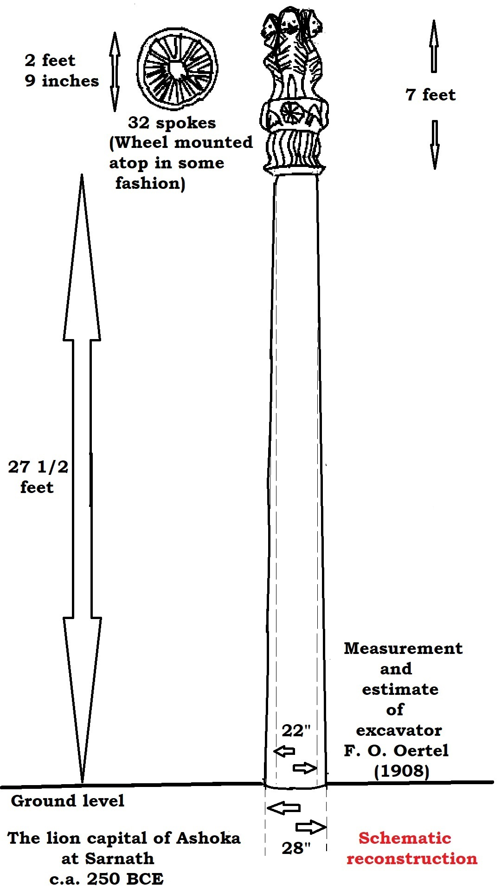
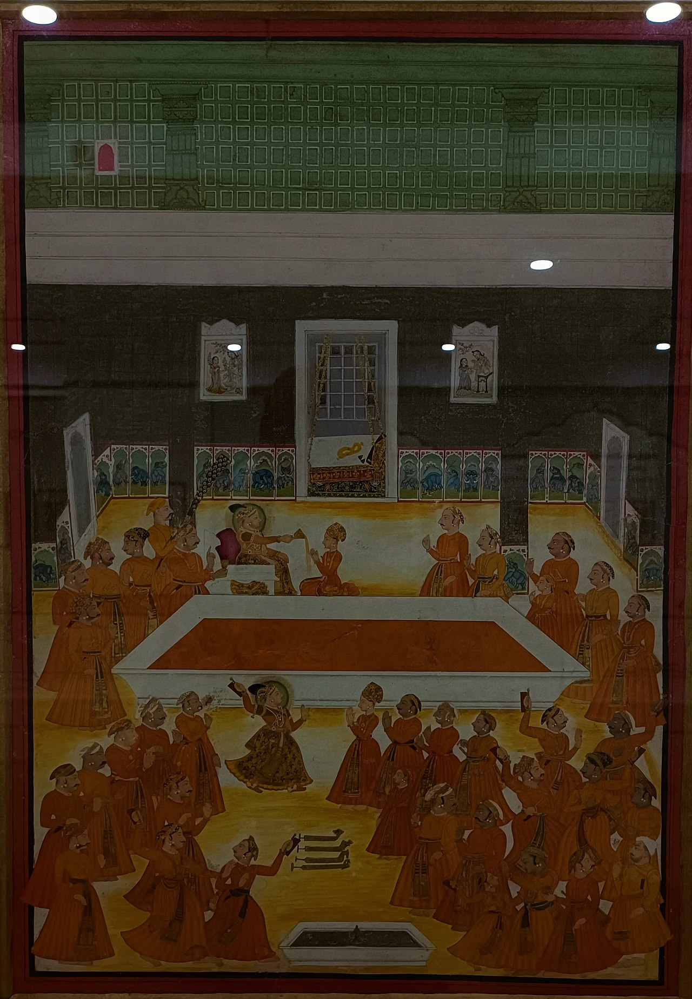

🏆 Meesterwerk: Ajanta Grotten Fresco's (5e - 6e eeuw)
Meesterwerken van boeddhistische verhalen - indrukwekkende muurschilderingen in rotsen

Boeddhistische monasteren · Maharashtra, India · Fresco, klei op steen
🎨 STIJLFIGUREN & THEMA'S
🙏 Boeddhisme & Hindoeïsme
Religieuze kunst: Goden, godinnen, heiligen, boeddha's. Spirituele vertellingen.
👑 Koninklijke Kunst
Padenavastra: Koninklijke beelden van Chola, Pallava. Majestueus en stijlvol.
🏛️ Tempelarchitectuur
Shikhara: Torenvormige tempels, gopurams (Zuid-India). Gevormde architectuur.
✨ Miniaturen
Rangoli: Handgemaakte vloermotieven. Rajasthani miniaturen, Pahari.
🖼️ TOP 10 MEESTERWERKEN
1. Ajanta Grotten Fresco's (5e - 6e eeuw)
Boeddhistische Monasteren · Maharashtra, India · Fresco, klei op steen
Achtergrond: De Ajanta grotten bevatten 30 boeddhistische tempels met indrukwekkende fresco's die het leven van de boeddha en verhalen uit de Jataka's vertellen.
🔍 STIJLANALYSE
Techniek: Fresco - klei op natte muur, zonnedroogend.
Compositie: Dynamische beweging, verhalende sequenties.
Betekenis: Een van de grootste collecties van oude Indiase kunst.
2. Khajuraho Tempels (950 - 1050)
Chandela Dynastie · Kalksteen · Madhya Pradesh, India

Achtergrond: De Khajuraho tempels zijn beroemd om hun elegante erotische sculpturen - zowel van kunstzinnige kwaliteit als erotische verwachting.
🔍 STIJLANALYSE
Kunst: Versierd met lichamelijke taferelen, dansers, dieren, goden.
Symboliek: Het bindt tempelkunst met sensualiteit en levensvreugde.
Functie: Literatuur en spirituele symboliek, geen pornografie.
3. Koninklijke Standbeeld van Ganga Devi (12e eeuw)
Hoysala Dynastie · Kalksteen · Karnataka, India

Achtergrond: Dit prachtige standbeeld toont de godin Ganga (de Ganges) op een elefant, met haar zuster Yamuna op een ander dier.
🔍 STIJLANALYSE
Detail: Meer dan 500 tonen gewicht, versterkte voetbasis.
Stijl: Hoysala stijl - complex reliefwerk, delicate trekken.
Positie: Grootste cultusbeeld van Karnataka.
4. Elefantastempel (Hoysaleswara) (12e eeuw)
Hoysala Dynastie · Kalksteen · Karnataka, India

Achtergrond: De tempel is gebouwd als ode aan de Hoysala koninklijke dynastie, met talloze mythologische sculpturen.
🔍 STIJLANALYSE
Structuur: Poligonaal opgebouwd uit 24 honderden specifieke polijste steensoorten.
Scènes: Uitgelijnde religieuze teksten, 1500+ standbeelden.
Architectuur: 16 mischellijnen, gebeeldhouwde planken.
5. Taj Mahal (1632 - 1653)
Mogol · Marmer · Agra, India

Achtergrond: Het mausoleum van Shah Jahan voor zijn vrouw Mumtaz Mahal - een icoon van liefde en architectuur.
🔍 STIJLANALYSE
Architectuur: Perfecte symmetrie, marmer met ingebedde edelstenen.
Detail: Ingebedde parels, robijnen, saffieren in het marmer.
Invloed: Islamitische, Perzische, Indiase en Europese stijlen.
6. Ellora Caves (600 - 1000)
Maratha Dynastie · Rotsgravingen · Maharashtra, India

Achtergrond: 12 holte-kerkens (blijven: boeddhistisch), 17 hindoeïstische tempels en 1 joodse synagoge in een lineaire structuur.
🔍 STIJLANALYSE
Techniek: Grote formaten van 300 tonn, grotschilderingen, extreem gedetailleerde architectuur.
Bestaand: De Vishvakarma tempel - de grootste enkele steen op een platform.
Functie: Verken jegelijkzeeker en vrede tussen religies.
7. Koninklijk Basalt Beeld (2e - 3e eeuw)
Maurya Dynastie · Basalt · Bihar, India

Achtergrond: Dit monumentale beeld van Ashoka de Grote wordt vaak geassocieerd met Asoka's koninklijke leiderschap.
🔍 STIJLANALYSE
Stijl: Stijlvolle eenvoud, belangrijke religieuze symboliek voor boeddhisme.
Functie: Reusachtige steengroepen, soms 20-40 meter hoog.
Inspiraat: Directe inspiratie voor China's Yungang en Longmen grotten.
8. Koninklijk Bronzen Beeld (10e - 12e eeuw)
Chola Dynastie · Brons · Tamil Nadu, India

Achtergrond: De Chola's maakten 'klassieke' standbeelden die nog steeds een inspiratiebron vormen voor moderne Indiase kunstenaars.
🔍 STIJLANALYSE
Stijl: Klassieke en expressieve stijl, fijn gedetailleerde sculpturen.
Positie: Grote diversiteit, zowel religieus als koninklijk.
Betekenis: Gevormde Indiase stijl en grote techneuten.
9. Miniaturen (Pahari/Rajasthani) (17e - 19e eeuw)
Indiase Regeringen · Verf, papier · Rajasthan, Himalaya

Achtergrond: De Indiase miniaturen zijn zeer gedetailleerde, kleurrijke afbeeldingen van boeddhistische, hindoeïstische en islamitische verhalen.
🔍 STIJLANALYSE
Detail: Zoals een goudlief, "geen schaduw van een eend" (an-e-sab-zadeh).
Techniek: Pigmenten van planten en mineralen, vlekbestendige koperoxide.
Betekenis: Eerste Indiase mode van kunst en design.
10. Sri Yantra Mandala (Traditioneel)
Tantrische Traditie · Teken/Tekening · Geheel India

Achtergrond: De Sri Yantra is een complexe geometrische mystieke tekening die dient als mantra-visualisatie voor tantrische rituelen.
🔍 STIJLANALYSE
Formaat: Complex concentrisch diagram met negen geassocieerde getallen.
Symboliek: Voorstelling van de kosmische structuur en de godin Tripura Sundari.
Functie: Meditatief visualisatie voor yogi's en mystici.
📚 TIJDSGEEST CONTEXT
🌍 POLITIEK PERSPECTIEF
De Maurya-periode (322-185 v.Chr.) markeerde het begin van een georganiseerde imperiale politiek in India. De Koninklijke portretkunst van deze periode, met name de beroemde Asokan-standbeelden, visualiseerde de nieuwe politieke orde: de koning niet als individueel held, maar als boeddhistische vorst. Het Koninklijk stenen boeddha-beeld (197 v.Chr., Sarnath) toont Asoka als een beeld van perfecte uitdrukking, met gesloten ogen en een rustige gelaatstrekken – een directe weergave van boeddhistische politiek: rechtvaardigheid, mildheid en vooruitgang van de staat. Deze beelden werden verspreid over het gehele imperium, wat direct politieke boodschappen verstuurde: de koning was niet alleen de politieke leider, maar ook de spirituele patronus van het boeddhisme.
De Gouden eeuwen van Gupta (4e-6e eeuw n.Chr.) vormden een periode van culturele bloei waarin koninklijke patronage kunst ondersteunde. De Tempelbouw van deze periode – met de beroemde Ellora-tempels – was direct verweven met politieke legitimatie. De Vertegenwoordiging van Vishnu en Shiva in tempelreliëfs was een politieke actie: koningen claimden de bescherming van deze goden en visualiseerden hun goddelijke patronage in hun bouwwerken. Het tempel van Vijayanagara (14e-16e eeuw) is een monumentaal staaltel van politieke projectie: gigantische tempelcomplexen die de macht van de Vijayanagara-coninkrijken illustrateerden.
De Islamitische invloed op Indiaanse kunst begon in de 12e eeuw met de komst van de Delhi Sultanate en culmineerde in de Mogolrijk (1526-1857). De Mogol-kunst – met haar portretten van keizers, paleisarchitectuur en miniaturen – was direct politiek georiënteerd. Het Humayun's Mausoleum (1570) en Taj Mahal (1653) waren niet slechts monumenten voor koninklijke schrijvers; ze waren uitgebreide statements van politieke macht. De Portretkunst van keizers – met hun glanzende wapenrustingen, symbolische attributen en stedelijke, verfijnde gelaatstrekken – visualiseerden de Mogol-koningen als 'mensen van de wereld' die de Islamitische erfenis combineerden met Indische technieken.
De Koloniale periode (17e-20e eeuw) bracht nieuwe politieke dynamiek: British Raj-functies. De Koloniale archiefkunst – met haar 'Rijstvelden en Woestijnen' – was politiek: ze documenteerde de Britse claim op Indiaanse territoria en kusten. De Koloniale portretkunst van Britse officieren in Indiaanse kleding was een direct statement: ze claimerden Indiaanse identiteit als onderdeel van hun 'kultuurbewustzijn'. De Britse inscripties op tempels en architectuur – zoals op de Khajuraho-tempels – versterkten deze claim. Deze periode liet een dubbele politieke erfenis: Britse verovering en Indische culturele resilience.
De post-koloniale periode (na 1947) kenmerkte zich door een nieuwe politieke orde: onafhankelijkheid en nationaal-identiteit. De Nationale kunst – met werken zoals de Mahatma Gandhi-portretten – visualiseerde de nieuwe Indiaanse nationale identiteit: pluralistisch, meervoudig en fusioneerend. Deze kunst was direct politiek: ze legitimeerden de nieuwe Indiase natie en verenigden verschillende culturele tradities onder één politieke vlag.
📚 LITERAIR PERSPECTIEF
De Vedas (ca. 1500-1200 v.Chr.) vormen de basis van Indische literatuur en kunst. Deze hymnen, gebeden en rituele teksten werden direct vertaald in kunst – met name de Yajna-altaren en Homa-functies die fysieke representaties van de Vedische riten waren. De Upanishads (800-500 v.Chr.) – filosofische teksten over atman, brahman en moksha – inspireerden later kunst, met name de Indische boeddha-beelden en Hindoe-godenbeelden. Deze teksten waren direct vertaald in beelden: boeddha-beelden representeerden de uitleg van de vier waarheden; Hindoe-godenbeelden representeerden de theologie van reïncarnatie, karma en dharma.
De epische poëzie van India – de Ramayana en Mahabharata – vormt de ruggengraat van Indische literatuur en kunst. Deze epische verhalen werden direct vertaald in tempelreliëfs, miniaturen en monumentale beelden. De Tempelreliëfs van Khajuraho (9th-12th eeuw) verhalen scènes uit de Ramayana en Mahabharata; de Portretten van Gandhari en Draupadi uit de Mahabharata zijn geschilderd in Indiase miniaturen. Deze teksten functioneren als historisch en religieus document: ze leggen de morele universele code van Indiaanse samenleving vast.
Sanskriet literatuur – met poëzie, drama, proza en technisch werk – vormde de basis voor kunstproductie. De Shilpashastra's (teksten over kunst en handel) – zoals de Kalpa Sutra – beschrijven kunsttechnieken, materiaalgebruik en esthetische principes. Deze teksten waren direct vertaald in kunst: de technieken van bronsgieten, houtsnijwerk en tempelbouw volgen deze regels. De Rasa-theorie – die vijf emotionele stijl figuren (shringara, heroïsch, humoristisch, zuiverend, pijnlijk) definieert – was direct vertaald in kunst: boeddha-beelden, Hindoe-godenbeelden en miniaturen verhalen deze emoto's.
De Indische miniaturen (ca. 9e-19e eeuw) – met hun verhalende teksten, portretten en historische scènes – waren direct georiënteerd op literatuur. De Mughal-miniaturen van keizers en keizerinnen, de Rajasthani miniaturen van goden en godinnen, de Pahari miniaturen van folklore en mythen – alle verhalen literatuur. Deze teksten functioneren als historisch en religieus document: ze leggen de culturele universele code van Indiaanse samenleving vast.
Hedendaagse Indische kunst verwerkt deze literaire traditie. De Kolkata School en New Delhi School werken met thema's uit de Ramayana en Mahabharata. De Southeast Asia-Indische miniaturen in Theravada en Vajrayana beelden, ondersteund door de Ritual-Tijds teksten, illustreren literatuur. De link tussen literatuur en kunst blijft sterk: zonder de teksten zijn de beelden slechts decoratie; mét de teksten worden ze levende documenten van cultureel geheugen, filosofische discussie en historische getuigenis.
🧠 PSYCHOLOGISCH PERSPECTIEF
De Dharma en karma concepten vormen de psychologische basis voor veel Indische kunst. Het boeddha-beeld visualiseert de status van 'bijna-verlichting' – een gezicht met gesloten ogen, een half-gesloten mond, een stoïcijnse gelaatstrekken – wat direct vertaald wordt in de gelaatstrekken van boeddha-beelden. De Hindoe-god-beelden visualiseren de concepten van dharma (plicht) en karma (actie en gevolg): de goden handelen volgens universele regels, wat hun gelaatstrekken reflecteert.
Meditatie en yogapraktijken zijn direct vertaald in de stilte van boeddha-beelden. Het boeddha-beeld met gesloten ogen (bijvoorbeeld de Bharhut-boeddha of de Sarnath-boeddha) visualiseert de staat van meditatieve vrede – een fysieke representatie van de yogische praktijk. De boeddha-beelden in lotushouding visualiseren de fysieke techniek van yogapraktijk. Deze beelden waren direct psychologisch georiënteerd: ze representeerden de uitleg van de yogatische lading en hun gelaatstrekken waren fysieke representaties van de yogische laag.
De goddelijke avatar incarnaties zijn direct vertaald in de representatie van diverse goden. Het Hanuman-beeld visualiseert de incarnatie van windgod; het Vishnu-beeld visualiseert de incarnatie van beschermgod; het Krishna-beeld visualiseert de incarnatie van goddelijke liefde. Deze beelden waren direct psychologisch georiënteerd: ze representeerden de uitleg van avatar-gebeurtenissen en hun gelaatstrekken waren fysieke representaties van avatar-gebeurtenissen.
De serene boeddha-beelden visualiseren de staat van perfecte vrede – een fysieke representatie van de boeddhistische uitleg van de vier waarheden. De dynamische hindoe-godenbeelden visualiseren de staat van perfecte actie – een fysieke representatie van de Hindoe-theologie van aktie. Deze beelden waren direct psychologisch georiënteerd: ze representeerden de uitleg van boeddhistische en Hindoe-theologie en hun gelaatstrekken waren fysieke representaties van these-theologie.
De psychologische functionaliteit van boeddha-beelden en Hindoe-godenbeelden is direct gekoppeld aan de theologie. Het boeddha-beeld visualiseert de status van 'bijna-verlichting' – een fysieke representatie van de boeddhistische uitleg van de vier waarheden. De Hindoe-god-beelden visualiseren de status van 'perfecte actie' – een fysieke representatie van de Hindoe-theologie van aktie. Deze beelden waren direct psychologisch georiënteerd: ze representeerden de uitleg van boeddhistische en Hindoe-theologie en hun gelaatstrekken waren fysieke representaties van these-theologie.
📜 HISTORISCH PERSPECTIEF
De Indus beschaving (2600-1900 v.Chr.) was een vroege Indische beschaving die direct vertaald werd in kunst. De Indus-modellen en -figuurtjes toonden een ongekende techniek en artiestische vaardigheid: de gerimpelde Indus-taart, de speelvogels, de boog-beelden. Deze kunst was direct georiënteerd op historische ontwikkeling: ze representeerden de fysieke representatie van Indus-ontwikkeling. De Indus-taart-beelden – met hun uitleg van rituelen – waren fysieke representaties van Indus-ontwikkeling.
De Boeddhistische expansie in India begon in de 3e eeuw v.Chr. met koning Asoka. De Asokan-beelden en tempels – zoals de Sarnath-boeddha-beelden en tempel van Sarnath – waren direct vertaald in boeddhistische kunst. Deze beelden waren direct georiënteerd op historische ontwikkeling: ze representeerden de fysieke representatie van Boeddhistische expansie. De boeddhistische beelden in Ajanta en Cave-tempels waren fysieke representaties van Boeddhistische expansie.
De Islamitische architectuur in India – met de Mogoltempels en Mogol-imperium – was direct vertaald in Indische kunst. De Mogol-tempels – zoals de Taj Mahal en Humayun's Mausoleum – waren direct vertaald in Indische kunst. Deze beelden waren direct georiënteerd op historische ontwikkeling: ze representeerden de fysieke representatie van Islamitische architectuur. De Mogol-miniaturen – met hun verhalende teksten, portretten en historische scènes – waren fysieke representaties van Islamitische architectuur.
De Koloniale periode – met de British Raj-functies en Koloniale archiefkunst – was direct vertaald in Indische kunst. De Koloniale portretkunst van Britse officieren in Indiaanse kleding, de Koloniale beelden van Indiaanse festivals – allemaal vertaald in Indische kunst. Deze beelden waren direct georiënteerd op historische ontwikkeling: ze representeerden de fysieke representatie van Koloniale periode. De Britse inscripties op tempels en architectuur – zoals op de Khajuraho-tempels – waren fysieke representaties van Koloniale periode.
De post-koloniale periode (na 1947) kenmerkte zich door een nieuwe historische ontwikkeling: onafhankelijkheid en nationaal-identiteit. De Nationale kunst – met werken zoals de Mahatma Gandhi-portretten – was direct vertaald in Indische kunst. Deze beelden waren direct georiënteerd op historische ontwikkeling: ze representeerden de fysieke representatie van post-koloniale periode. De Nationale kunst – met haar verhalende teksten, portretten en historische scènes – was fysieke representatie van post-koloniale periode.
💭 FILOSOFISCH PERSPECTIEF
De Hindoeïsme – met de concepten van trimurti (Brahma, Vishnu, Shiva) en reïncarnatie – was direct vertaald in Indische kunst. De boeddha-beelden visualiseerden de uitleg van boeddhistische theologie; de Hindoe-godenbeelden visualiseerden de uitleg van Hindoe-theologie. Deze beelden waren direct vertaald in de theologie: ze representeerden de fysieke representatie van Hindoeïsme. De boeddha-beelden – met hun gesloten ogen en stille gelaatstrekken – waren fysieke representaties van boeddhistische theologie. De Hindoe-godenbeelden – met hun dynamische gelaatstrekken en lading – waren fysieke representaties van Hindoe-theologie.
De Boeddhisme – met de vier waarheden en nirvana – was direct vertaald in Indische kunst. De boeddha-beelden visualiseerden de uitleg van boeddhistische theologie. Deze beelden waren direct vertaald in de theologie: ze representeerden de fysieke representatie van Boeddhisme. De boeddha-beelden – met hun gesloten ogen en stille gelaatstrekken – waren fysieke representaties van boeddhistische theologie.
De Islamitische mystiek (soefisme) was direct vertaald in Indische kunst. De Mogol-miniaturen – met hun verhalende teksten, portretten en historische scènes – waren direct vertaald in Indische kunst. Deze beelden waren direct vertaald in de theologie: ze representeerden de fysieke representatie van Islamitische mystiek. De Mogol-miniaturen – met hun verhalende teksten, portretten en historische scènes – waren fysieke representaties van Islamitische mystiek.
De abstracte yantra's en mandala's waren direct vertaald in Indische kunst. De boeddha-beelden visualiseerden de uitleg van boeddhistische theologie; de Hindoe-godenbeelden visualiseerden de uitleg van Hindoe-theologie. Deze beelden waren direct vertaald in de theologie: ze representeerden de fysieke representatie van abstracte yantra's en mandala's. De boeddha-beelden – met hun gesloten ogen en stille gelaatstrekken – waren fysieke representaties van boeddhistische theologie. De Hindoe-godenbeelden – met hun dynamische gelaatstrekken en lading – waren fysieke representaties van Hindoe-theologie.
De link tussen abstracte yantra's en mandala's en boeddha-beelden, Hindoe-godenbeelden en miniaturen blijft sterk. Deze beelden waren direct vertaald in de theologie: ze representeerden de fysieke representatie van abstracte yantra's en mandala's. De boeddha-beelden – met hun gesloten ogen en stille gelaatstrekken – waren fysieke representaties van boeddhistische theologie. De Hindoe-godenbeelden – met hun dynamische gelaatstrekken en lading – waren fysieke representaties van Hindoe-theologie.